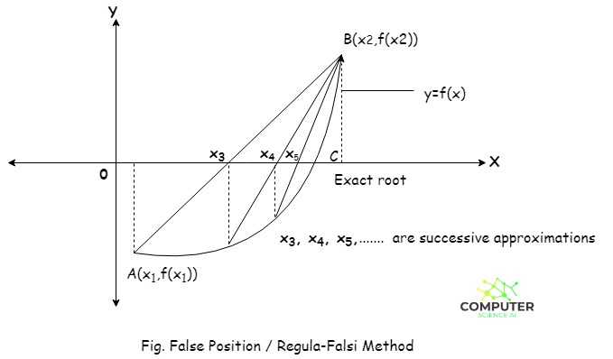
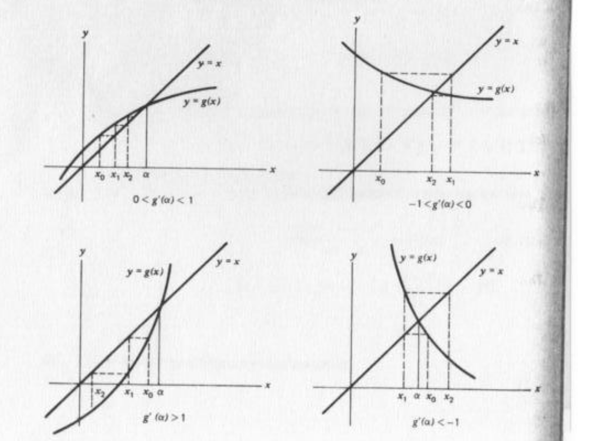

8. Zeri di equazioni non lineari
Definizione del problema
Data si affronta il problema di determinare eventuali tali che . Per evitare che l'algoritmo oscilli tra una soluzione e l'altra, si restringe la ricerca in sottointervalli in cui è presente un solo zero. Partendo da una guess iniziale, l'algoritmo iterativo genera una successione di soluzioni che (si spera) convergano alla soluzione reale. I metodi possono essere chiusi (bracketing methods), ovvero si richiede un intervallo su cui cercare la soluzione, oppure aperti, che possono divergere ma sono generalmente più veloci.
Ordine di convergenza
Un metodo si dice di ordine se, detta la radice ed la successione di soluzioni, si ha: Dove è detto fattore di convergenza. Se la convergenza si dice lineare.
Criteri di terminazione
In un metodo iterativo, per decidere quando terminare i calcoli si può stimare l'errore relativo: Ci si ferma quando .
Metodi chiusi
Si richiedono due valori e e si ricerca la soluzione . Tutti i metodi chiusi, ad eccezione del metodo di bisezione, sono ricavati trovando una pendenza di una retta passante per il punto , la cui intersezione con l'asse fornisce il punto successivo, .
Metodo di bisezione
Svantaggio: metodo lento.
Sia tale che , per il teorema di esistenza degli zeri si dimostra che Valutiamo la funzione in punto medio, ovvero e sia . Poniamo e supponiamo che . Allora Poniamo . Iterando tale procedimento volte, la radice (se non ancora trovata) sarà contenuta in un intervallo di lunghezza Quindi l'errore commesso nel considerare come radice è E si commette quando la radice è dall'altra parte dell'intervallo. Il metodo di bisezione ha generalmente convergenza lineare dato che:
Metodo della falsa posizione (regula falsi)
Il metodo della falsa posizione divide iterativamente l'intervallo come fatto dal metodo di bisezione, ma sfrutta le informazioni date dai valori della per determinare la soluzione successiva. Supponiamo di essere tra e , calcoliamo ed , dopodiché tracciamo la retta che passa tra i punti e Ponendo troviamo l'intersezione con l'asse : Si sostituisce o con a seconda se è o ad avere la con lo stesso segno di . In generale quindi si ha: Il rate di convergenza è lineare.

Metodo delle corde
Se anziché determinare la pendenza della retta ad ogni iterazione, ponessimo la pendenza costante E determinassimo la retta che passa da con pendenza per determinare , allora avremmo il metodo delle corde. Le rette di iterazioni successive sono parallele tra loro.
![\includegraphics[width=0.75\textwidth]{secantif_e.eps}](Ch_8_zeri_di_equazioni_non_lineari.assets/img267.png)
Metodi di punto fisso
Dato il problema principale di trovare , si costruisce una funzione ausiliaria tale che , ovvero tale che è un punto fisso di . La costruzione non è unica, può essere fatta in molteplici modi. Per trovare il punto fisso di che corrisponde allo zero di si sfrutta il teorema del punto fisso.
Teorema del punto fisso
Sia ed inoltre valga che Una funzione con tale proprietà è detta contrazione (il più piccolo per cui vale tale relazione è detto costante di Lipschitz). Allora vale che:
- Esiste unico un punto fisso
- Per ogni , se allora la successione tende al punto fisso
- Per l'errore vale che
Spiegazione:
- Esiste un unico punto fisso
- La successione definita converge al punto fisso
- L'errore sarà minore uguale di un valore proporzionale all'errore commesso all'inizio . La costante di proporzionalità dipende dal fattore .
Significato geometrico del teorema

La successione di soluzioni è In pratica la successione si collega ad ogni iterazione alla retta bisettrice e determina il punto successivo. Abbiamo 4 casi possibili, mostrati nella figura in alto, che variano a seconda del valore della derivata nel punto fisso . Vediamoli:
- [alto a sx] Funzione crescente e concava l'algoritmo converge a gradini
- [alto a dx] Funzione decrescente e convessa l'algoritmo converge a spirale
- [basso a sx] Funzione crescente e convessa l'algoritmo diverge a gradini
- [basso a dx] Funzione decrescente e concava l'algoritmo diverge a spirale
Velocità di convergenza del punto fisso
Sotto le ipotesi:
Osserviamo che l'errore: Se (quindi non si arriva al punto fisso con pendenza nulla) allora si ha: Dove ed essendo continua in per ipotesi, abbiamo: Tale rate di convergenza è detto lineare.
Se g'(x^)=0 \and g''(x^) \ne 0 allora Tale rate di convergenza è detto quadratico.
In generale: più derivate si annullano in , più veloce è il metodo.
Il termine a destra del limite è detto fattore asintotico di convergenza.
Numero di iterazioni
Il numero di iterazioni da eseguire affinché l'errore sia minore di è calcolato come segue.
Siano
- l'errore iniziale
- l'errore dopo iterazioni
Sia Tramite vari passaggi si può dimostrare che: Da cui si può ricavare (per semplicità ricaviamo solo per )
Metodo di Newton o delle tangenti
Se si ha il metodo di Newton. Consideriamo la tangente alla nel punto E sia . Il successivo punto sia dato dalla intersezione della retta tangente con l'asse Ripetendo iterativamente si ha: Con . Se la radice è semplice, il metodo è quadratico.
Metodo di Newton come metodo di punto fisso
Se vogliamo trovare uno zero di attraverso il metodo del punto fisso, una scelta comune per la funzione ausiliare è Con , cosicché quando troviamo allora . Abbiamo visto che il metodo del punto fisso è tanto più veloce quante più derivate si annullano nel punto fisso. Se deriviamo la otteniamo: La derivata prima di si annulla sul punto fisso ad una condizione A questo punto poniamo genericamente: Calcoliamo la derivata prima su ricordando che La derivata si annulla su se e solo se Quindi sostituiamo la funzione in : Dato che l'aggiornamento della soluzione nel metodo del punto fisso è , allora: Che è esattamente il metodo di Newton.
Radici multiple
Se lo zero che stiamo trovando ha una molteplicità allora la convergenza del metodo non è quadratica, bensì ma lineare. Ponendo però Il metodo torna ad essere quadratico (scarsa utilità, spesso non si conosce la molteplicità della radice).
Metodo delle secanti
Deriva dalla difficolta di calcolare la derivata di nel metodo di Newton.
La pendenza è data dal rapporto incrementale anziché dalla derivata: Sostituendo la tangente con la secante si ha un metodo più lento ma meno complesso. L'aggiornamento è quindi: Da cui: Poiché dipende esplicitamente da ed non è né una iterazione del punto fisso, né un metodo chiuso (non è richiesto il cambio di segno di ). Tale metodo può divergere. La sua convergenza è superlineare, ovvero l'ordine di convergenza è compreso tra 1 e 2. Risulta più veloce del metodo di bisezione, ma meno veloce del metodo di Newton.
Secanti contro Newton
Il metodo delle secanti è più veloce del metodo di Newton se la frazione di tempo del calcolo della derivata è maggiore del 44% del tempo di calcolo della .